أنظمة الحاسوب
تحليل وتصميم وتطوير أنظمة متكاملة لإدارة بيانات العمل: سجلات وحسابات تلقائية وصلاحيات وتقارير جاهزة للطباعة، تعمل دون إنترنت أو عبر المتصفح.
- Electron
- Node.js
- SQLite
- NestJS
Sajjad Nadhim
مهندس ومطور برمجيات، أمتلك خبرة في تطوير مجموعة متنوعة من أنظمة الحاسوب وتطبيقات سطح المكتب والهواتف الذكية، وتصميم الحلول البرمجية التي تلبي مختلف الاحتياجات العملية والتجارية.

مهندس ومطور برمجيات، أمتلك خبرة في تطوير مجموعة متنوعة من أنظمة الحاسوب وتطبيقات سطح المكتب والهواتف الذكية، وتصميم الحلول البرمجية التي تلبي مختلف الاحتياجات العملية والتجارية. أمتلك مهارات في البرمجة، وتصميم المنتجات باستخدام الذكاء الاصطناعي، وتصميم واجهات المستخدم، وتطوير الحلول الرقمية وتحسين كفاءة العمل. كما أمتلك خبرة في التصميم الإبداعي والتسويق الرقمي، وأسعى باستمرار إلى توظيف التقنيات الحديثة لتطوير أنظمة وتطبيقات احترافية وموثوقة، مع التركيز على الجودة والابتكار وتحقيق أفضل النتائج.
مهندس تقنيات حاسوب أسعى إلى توظيف مهاراتي التقنية والبرمجية في تطوير حلول ومنتجات رقمية مبتكرة، مع اهتمام بالفرص الدولية عن بُعد، والشركات المحلية، والجهات الحكومية، والعمل الحر.
1999
خدمات برمجية وتصميمية وتسويقية وتعليمية متكاملة، يمكنك الدخول إلى كل خدمة لمشاهدة الأعمال والتفاصيل.
تحليل وتصميم وتطوير أنظمة متكاملة لإدارة بيانات العمل: سجلات وحسابات تلقائية وصلاحيات وتقارير جاهزة للطباعة، تعمل دون إنترنت أو عبر المتصفح.
تطبيقات Windows بواجهة عربية تعمل دون إنترنت، بقواعد بيانات محلية ونسخ احتياطي وتشفير وتقارير Excel وPDF، مع مثبّتات جاهزة للتوزيع.
تطبيقات أندرويد بواجهة عربية باستخدام Flutter، وتطبيقات ويب تقدّمية (PWA) تعمل على الهاتف دون تثبيت.
واجهات واضحة وسريعة الفهم بنظام تصميم موحّد ودعم كامل للعربية من اليمين إلى اليسار، تعمل على الحاسوب والهاتف والتابلت.
توظيف أدوات الذكاء الاصطناعي لتحويل الفكرة إلى منتج: من التخطيط والتوثيق وتصميم المعمارية إلى التنفيذ والاختبار بسرعة وجودة أعلى.
تحويل العمليات اليدوية والملفات المتفرقة إلى أنظمة رقمية تختصر الوقت وتقلل الأخطاء، مع أرشفة وتقارير وتتبّع لكل عملية.
تصميم هويات بصرية وشعارات ومحتوى مرئي متّسق لمشروعك أو صفحتك، مع إدارة صفحات عمل حقيقية مثل Trendnium وبحثك.
إدارة صفحات الأعمال على وسائل التواصل، وتخطيط الحملات الإعلانية وإدارتها، وبناء حضور رقمي واضح للمشاريع والخدمات.
إنتاج ومونتاج مقاطع قصيرة (ريلز) وفيديوهات تعريفية للمشاريع والخدمات بإيقاع سريع وهوية بصرية موحّدة.
دورات تأخذك من أساسيات التصميم إلى بناء هوية بصرية متكاملة: الشعار والألوان والخطوط ودليل الاستخدام، بتطبيق عملي على مشروع حقيقي.
دورات في أساسيات الإعلان الرقمي: تحديد الجمهور المستهدف، وكتابة الإعلان، وتصميم المحتوى، وإعداد الحملات وقياس نتائجها.
دورات لتعلّم البرمجة من الصفر بأسلوب عملي: أساسيات المنطق والخوارزميات، ثم بناء تطبيقات صغيرة تتدرج حتى مشروع كامل.
إرشاد ودعم في تنفيذ المشاريع التقنية ومشاريع التخرج الجامعية: من اختيار الفكرة والتحليل والتصميم إلى البرمجة والتوثيق والعرض.
إعداد الخرائط وتصميمها حسب الحاجة: خرائط المواقع والفروع والمسارات، وخرائط توضيحية للمشاريع والتقارير والعروض.
تصميم عروض تقديمية انسيابية وأنيقة بإيقاع واضح وانتقالات سلسة، للشركات والطلبة والمؤتمرات، وجاهزة للعرض.
كتابة السيرة الذاتية وتصميمها بشكل احترافي بالعربية والإنجليزية، بتنسيق مرتب وجاهزة للإرسال والطباعة.
مساعدة في حل المشكلات التقنية اليومية: إعداد الأجهزة والبرامج، وتنظيم الملفات والأنظمة، واستشارات لاختيار الأداة أو الحل الأنسب.
منتجات رقمية جاهزة للتحميل: قوالب تصميم وعروض وملفات عمل وأدوات تساعدك على إنجاز عملك بوقت أقصر.
تجهيز الملفات للطباعة وتنفيذها: بطاقات وبوسترات وفلايرات وملصقات وأوراق رسمية، بمقاسات وألوان مضبوطة.
تصميم مفكرات وأجندات سنوية بهوية خاصة بالشركة أو الجهة: تخطيط الصفحات والأقسام والتقاويم، وتجهيزها للطباعة.
لديك فكرة أو حاجة لا تجدها ضمن القائمة؟ أخبرني بها وسأدرسها وأقترح عليك الحل الأنسب.
أنظمة وتطبيقات صممتها وطورتها بنفسي بتركيز على الموثوقية وحماية البيانات، ومعظمها يعمل دون إنترنت.
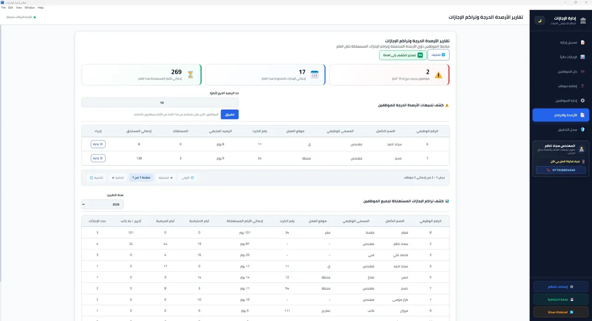
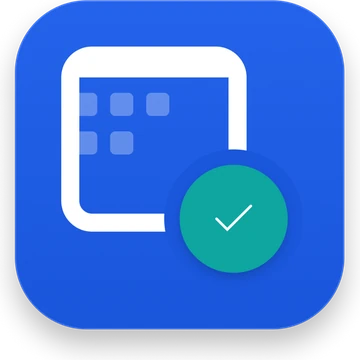
منشورنظام مكتبي عربي يعمل دون إنترنت لإدارة إجازات الموظفين، يحتسب الأرصدة تلقائيًا ويمنع تداخل الإجازات، مع سجل تدقيق ونسخ احتياطي واستعادة وتقارير Excel جاهزة للطباعة.
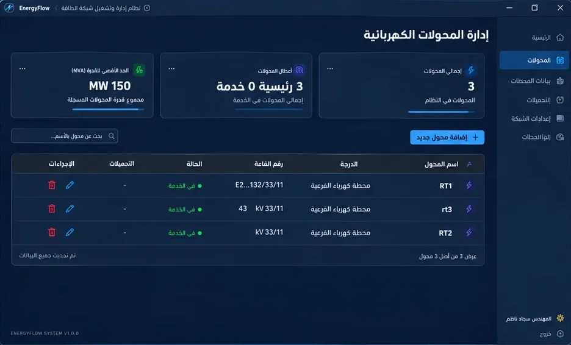
غير منشورتطبيق Windows عربي يعمل دون إنترنت لأرشفة وإدارة بيانات شبكات نقل الطاقة: المحطات والخطوط والمحولات والمغذيات والقراءات الشهرية، مع تقارير Excel وتشفير للبيانات.
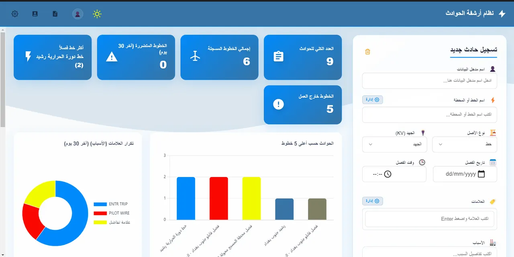
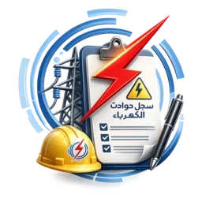
غير منشورتطبيق Windows يعمل دون إنترنت لأرشفة حوادث وأعطال شبكة الطاقة (فصل وعودة التيار)، مع مركز تحليلات ومؤشرات، وتصدير Excel وCSV، ونسخ احتياطي واستعادة.
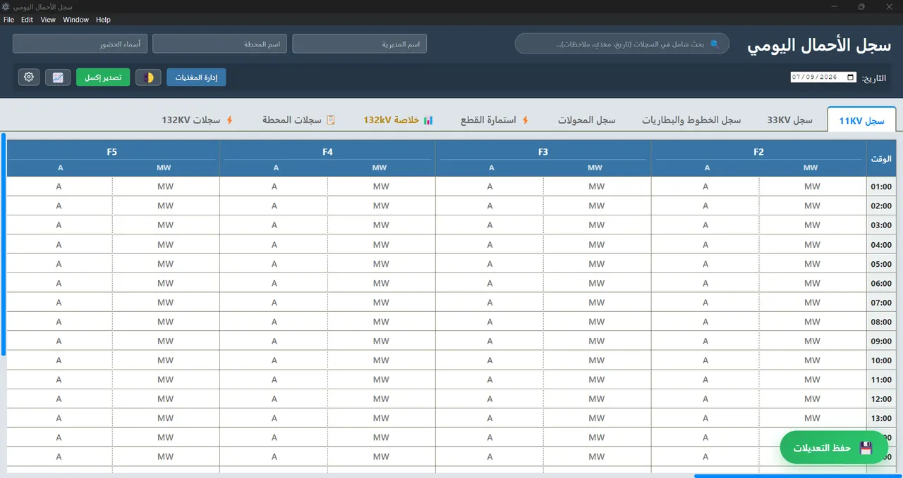
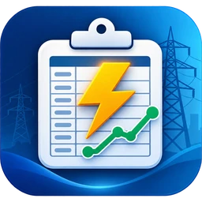
غير منشورتطبيق Windows لتسجيل أحمال المحطات الثانوية وأعطال المحولات والمغذيات ساعةً بساعة، قابل للتخصيص، مع تقارير Excel ونسخ احتياطي واستعادة.
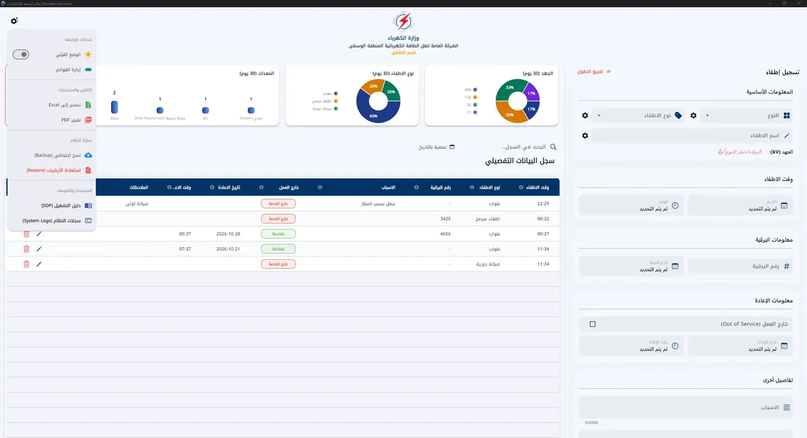
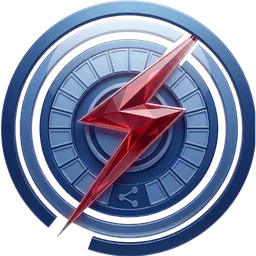
غير منشورتطبيق Flutter لسطح مكتب Windows يعمل دون إنترنت لتسجيل الإطفاءات والإعادة على خطوط نقل الطاقة، مع تقارير Excel وPDF ونسخ احتياطي واستعادة.
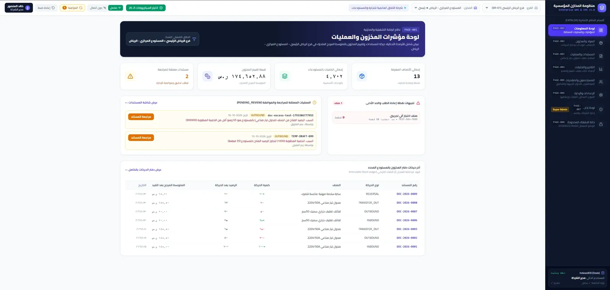
قيد التطويرنظام لإدارة المخازن والمخزون يعمل من المتصفح على الحاسوب والهاتف، دون تثبيت. يتابع الاستلام والصرف والتحويل والجرد بين عدة فروع ومخازن، مع صلاحيات واضحة لكل موظف وتسجيل لكل عملية.
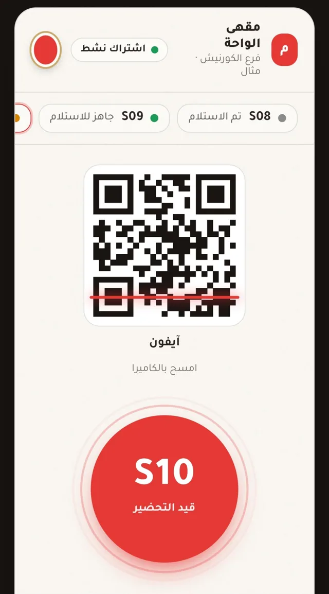
قيد التطويرنظام استدعاء لحظي للمقاهي والمطاعم يستبدل أجهزة الاستدعاء (Pagers) التقليدية بهاتف الزبون: يمسح الزبون رمز QR عند الطلب، وحين يغيّر الموظف حالة الطلب من التابلت إلى «جاهز» يصل التنبيه إلى هاتفه فورًا بالصوت والاهتزاز والحركة البصرية.
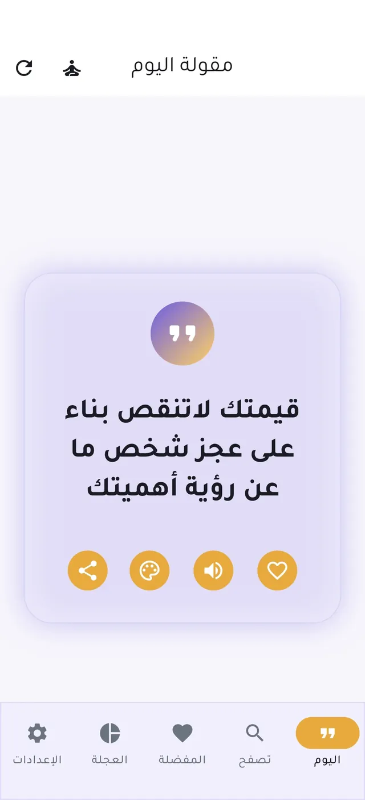
منشور بشكل محدودتطبيق أندرويد يعمل دون إنترنت للمقولات التحفيزية والتأمل الذاتي، يضم عجلة الحياة لتقييم تسعة مجالات مع تقارير ومقارنات، وودجت للشاشة الرئيسية وتنبيهات يومية ونسخ احتياطي واستعادة.
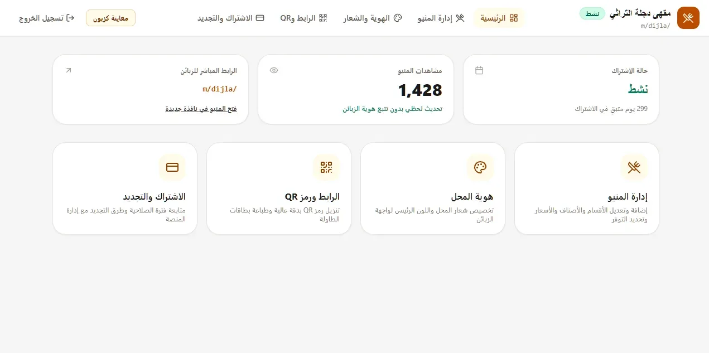
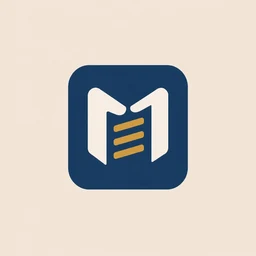
قيد التطويرمنصة ويب تقدّمية لعرض المنيو التفاعلي للمقاهي والمطاعم في العراق، لكل محل رابطه ورمز QR ولوحة تحكم عربية. المشروع قيد التطوير حاليًا: لوحة المحل ولوحة إدارة المنصة تعملان بنسخة تجريبية.
كل تقنية مرتبطة بالمشاريع التي استخدمتُها فيها فعليًا، بلا نسب مئوية.
مهارات مساندة: إدارة الصفحات، التسويق الرقمي وإدارة الحملات الإعلانية، إنتاج المحتوى المرئي والمونتاج.
إلى جانب البرمجة، أصمم هويات بصرية وأدير صفحات عمل.
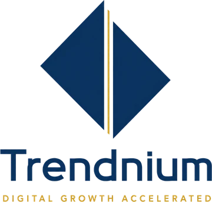
صفحة مخصصة للخدمات البرمجية ودورات البرمجة، تقدّم حلولًا رقمية وتعليمًا لمن يرغب في دخول عالم البرمجة.
زيارة الصفحة — Trendnium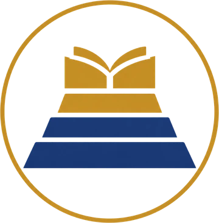
صفحة مخصصة لخدمات بحوث تخرج الطلاب، وخدمات التقديم، والتقارير، والمشاريع البرمجية، إلى جانب خدمات ثانوية أخرى.
زيارة الصفحة — بحثكمهتم بالفرص الدولية عن بُعد، والشركات المحلية، والجهات الحكومية، والعمل الحر.